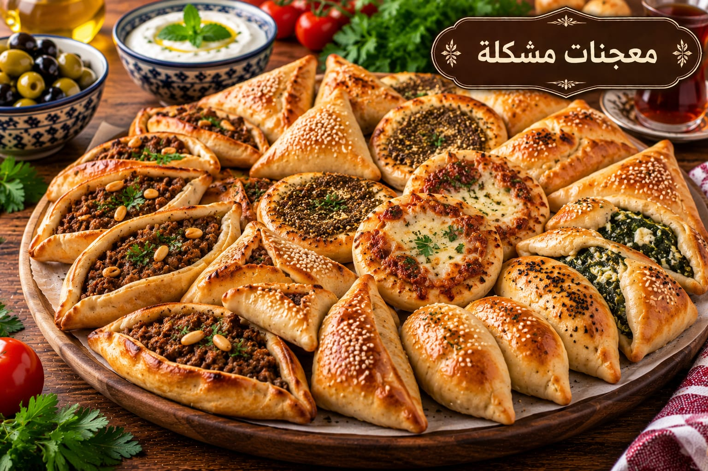

معجنات مشكلة
عجينة طرية بحشوات متنوعة

مقادير معجنات مشكلة
- 4 أكواب طحين
- 1 ملعقة كبيرة خميرة
- 1 ملعقة كبيرة سكر
- 1 ملعقة صغيرة ملح
- ¼ كوب زيت
- 1½ كوب ماء دافئ تقريبًا
- حشوات جبنة أو زعتر أو لحم حسب الرغبة
طريقة عمل معجنات مشكلة
- اخلطي الطحين والخميرة والسكر والملح.
- أضيفي الزيت والماء تدريجيًا واعجني 8–10 دقائق حتى تصبح العجينة ملساء.
- غطيها واتركيها تختمر نحو 60 دقيقة حتى يتضاعف حجمها.
- قسميها وشكليها بالحشوات المطلوبة واتركيها 10 دقائق.
- اخبزيها في فرن محمى مسبقًا على 200°م مدة 15–20 دقيقة حتى تتحمر.